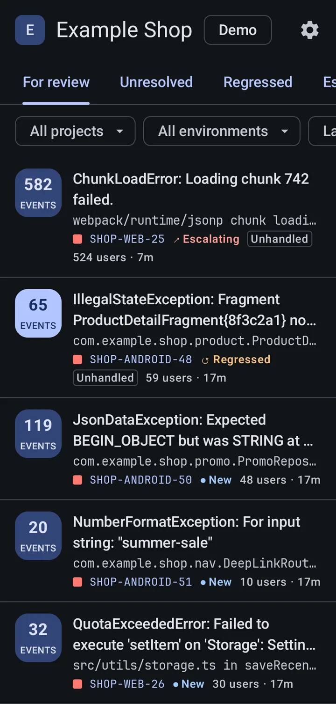
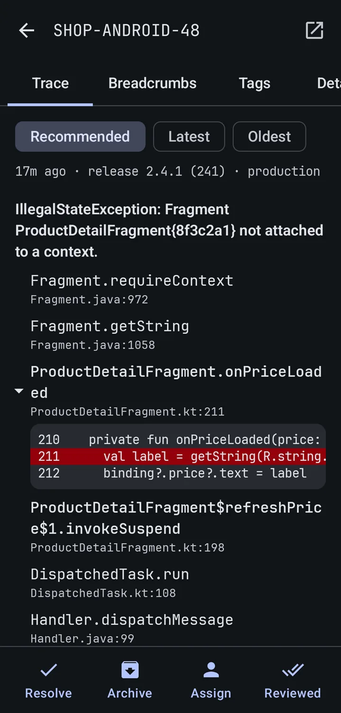
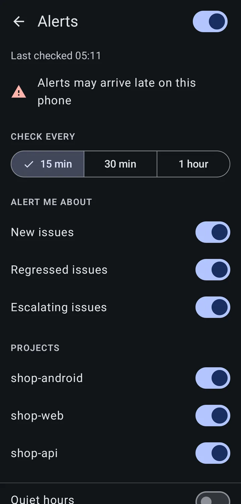

Free · Open source · No tracking
Production broke.
You'll know first.
Triage watches your Sentry issues and taps you on the shoulder when something new, regressed or escalating shows up. Read the stack trace and resolve it before you're back at your desk.

An inbox, not a dashboard.
Issues sorted the way you triage: for review, unresolved, regressed, escalating. Filter by project or environment, pull to refresh, and swipe right to resolve or left to archive.
Every action has an undo, and it's the same request Sentry's own website sends.
The stack trace, readable on a phone.
The latest event's stack trace with your app's frames highlighted, the lines around them, breadcrumbs, tags and a 24-hour trend.
Enough to know whether it can wait until morning.

Alerts that respect your evening.
Triage checks every 15, 30 or 60 minutes and notifies you about new, regressed and escalating issues, per project. Quiet hours hold them until morning.
Resolve or archive straight from the notification.

Try it without a Sentry account.
Install Triage and tap Try with sample data. You get a made-up online shop with real-looking issues, working actions and real alerts. Nothing leaves your phone. Connect your own Sentry whenever you like.
Install in a minute
Download
Tap Download for Android on your phone. You get triage.apk, the latest release.
Allow the install
Android asks once to let your browser install apps: tap Settings, switch it on, go back. Google Play Protect may say it doesn't know this app yet. That's normal for apps from outside the Play Store: tap More details → Install anyway.
Connect or explore
Paste a Sentry auth token (the app opens the right Sentry page), or tap Try with sample data.
Check the download (optional)
Each release lists the APK's SHA-256 fingerprint. Compare it with your download to be sure it wasn't changed on the way.
Stay up to date
Come back here for new versions, or let the free Obtainium app update Triage for you: add https://github.com/sriharinmn/triage-android.